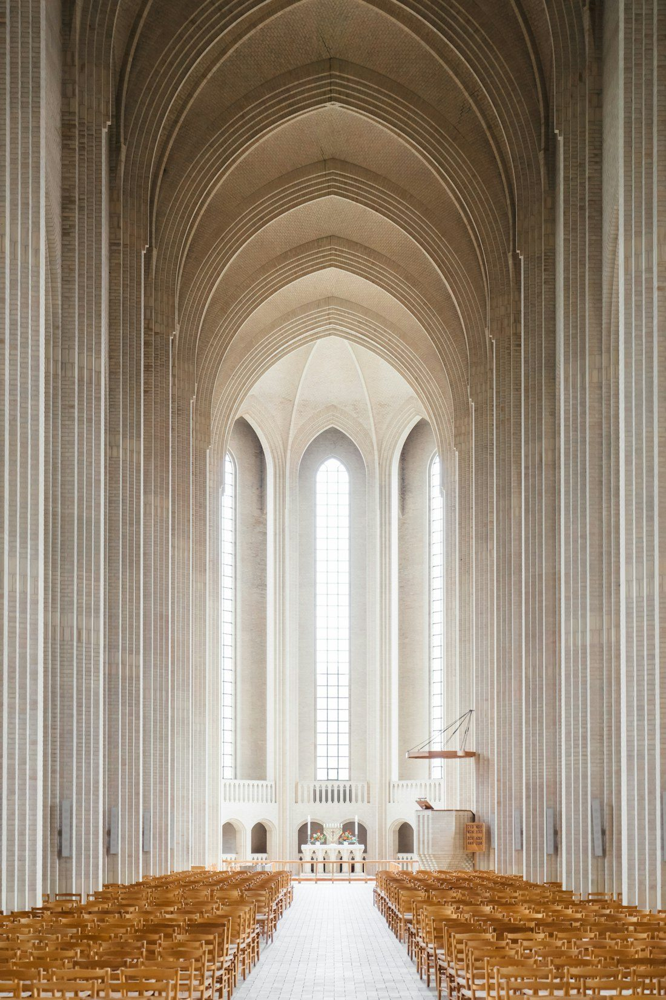
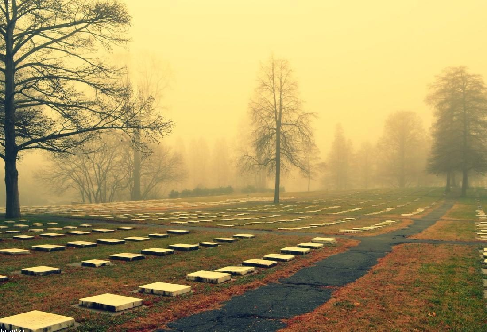

Cosa facciamo
Un accompagnamento completo, in ogni momento
Professionalità e qualità
Dalla prima telefonata fino all'ultimo saluto, ci occupiamo di ogni dettaglio con discrezione e cura.

Organizziamo cerimonie religiose e laiche, personalizzate secondo i desideri della famiglia e le tradizioni del defunto.
Curiamo ogni aspetto — dalla celebrazione in chiesa al rito civile — perché l'ultimo saluto sia un momento autentico e sentito.
Ci facciamo carico di tutte le pratiche amministrative e burocratiche: atto di morte, autorizzazioni, comunicazioni agli enti e pratiche cimiteriali.
Vi solleviamo da ogni incombenza, così che possiate dedicarvi solo a ciò che conta.
Composizioni floreali personalizzate per la cerimonia, il feretro e il luogo di sepoltura, realizzate con i fioristi del territorio.
Cuscini, corone, mazzi e addobbi per la chiesa: ogni fiore scelto con gusto e misura per onorare la memoria del vostro caro.
Gestiamo l'intero processo di cremazione con discrezione e accompagnamento costante della famiglia.
Offriamo un'ampia scelta di urne cinerarie e vi assistiamo nella conservazione, nell'affido o nella dispersione delle ceneri secondo le vostre volontà.
Realizziamo e pubblichiamo necrologi sui quotidiani locali e online, manifesti funebri, partecipazioni e ricordini.
Componiamo testi e immagini con cura tipografica, per dare un annuncio dignitoso e diffonderlo rapidamente nella comunità.

Vi accompagniamo nella scelta di lapidi, monumenti, fotoceramiche e opere commemorative durature.
Collaboriamo con marmisti e artigiani qualificati per realizzare segni di memoria su misura, capaci di custodire nel tempo il ricordo di chi amiamo.
Personale qualificato per le operazioni di esumazione ed estumulazione delle salme e per il disbrigo di tutte le pratiche correlate, comprese quelle di cremazione. Un servizio che si rende necessario alla scadenza delle concessioni con il Comune, per il recupero dei resti dalle sepolture in terra o nei loculi murari.